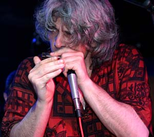

Руководитель Pera Joe Blues Band, виртуоз блюзовой губной гармоники Петар Миладинович, известный как "Pera Joe", - звезда европейской блюзовой сцены. Родился в 1961 г. в Крушеваце (Югославия), начал играть на губной гармонике в 9 лет, а в 19 стал одним из первопроходцев балканского блюза. Играл в многочисленных рок- и блюз-бэндах, а также в R'n'B и поп-группах Сербии, за что его иногда называют "Pera Joe - the session man". Одним из наиболее стабильных проектов в его музыкальной карьере был дуэт с гитаристом Homesick Mac, не без юмора называвшийся "самое маленькое трио в мире". Пера Джо выпустил несколько собственных CD альбомов и, кроме того, участвовал в многочисленных сессионных записях и джемах, в том числе и с такими легендарными музыкантами, как Луизиана Ред, Джон Хэммонд, Лари Гарнер, Микки Уоллер, Шугар Блю, Боб Гелдоф, Анна Попович, Джонни Марс, Сэм Митчелл. На протяжении 20 лет участвовал в блюзовых и джазовых фестивалях в Германии, Швеции, Дании, Венгрии, Италии, Швейцарии. Его авторитет в европейском блюзе настолько высок, что на "гармошечном" фестивале в Троссингене (ФРГ) Пера Джо участвует в качестве рефери в комиссии, оценивающей конкурсантов. Пера Джо дважды приезжал в Россию, его выступления на московском фестивале губной гармоники и в клубах привлекли большой интерес московских ценителей блюза.Pera Joe Blues Band был создан в 2003 году. В его состав вошли опытные белградские музыканты: Горан Стойкович (Goran Stojkovic) - lead vocal, guitar, Иван Чукич (Ivan Cukic) - bass guitar, Владимир Мигрич (Vladimir Migric) - drums. Каждый из них вносит свою краску в ансамблевое звучание, которое характеризует великолепный драйв и подлинное чувство блюза. Pera Joe Blues Band дает около 100 концертов в год в клубах Сербии, Швейцарии и других стран Европы, участвует в ведущих блюзовых фестивалях.
САЙТ ГРУППЫ:
www.myspace.com/perajoebluesband